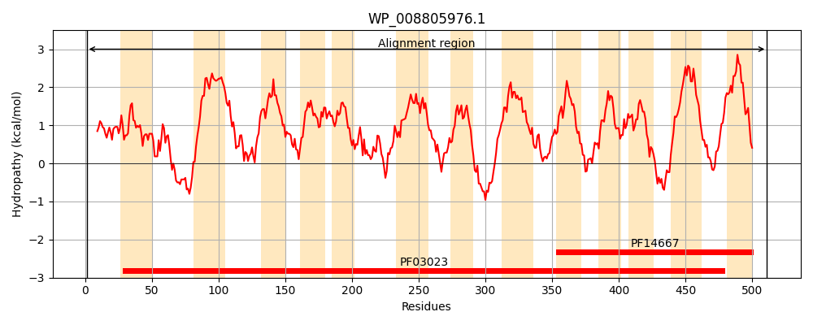
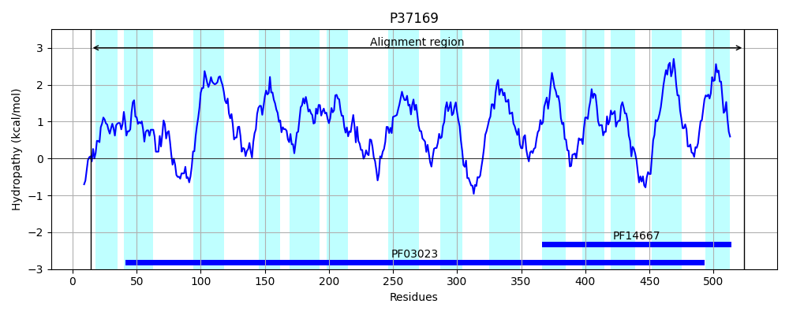
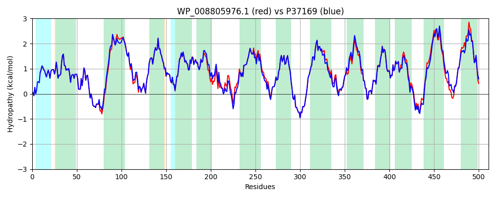

Hit Accession: P37169
Hit TCID: 2.A.66.4.1
Hit Description: gnl|BL_ORD_ID|10084 gnl|TC-DB|P37169|2.A.66.4.1 Virulence factor mviN - Salmonella typhimurium.
Mach Len: 511
e:0.000000
Query TMS Count : 13
Hit TMS Count: 14
TMS-Overlap Score: 13.750000
Predicted Substrates:CHEBI:15946;keto-D-fructose 6-phosphate
BLAST Alignment:
Score: 2374 , Bit scores: 919 bits, E-value: 0.0e+00, Alignment length: 511, Percentage identity: 91
Query: 1 MNLLKSLAAVSSMTMFSRVLGFARDAIVARIFGAGMATDAFFVAFKLPNLLRRIFAEGAFSQAFVPILAEYKSKQGEDATRVFVSYVSGLLTLALAIVTVIGMLAAPWVITITAPGFADTADKFALTTQLLRITFPYILLISLASLVGAILNTWNRFSVPAFAPTFLNVSMIGFALFAAPYFHPPVLALAWAVTVGGVLQLAYQLPHLKKIGMLVLPRINLKDAGAMRVVKQMGPAILGVSVSQISLIINTIFASFLVSGSVSWMYYADRLMEFPSGVLGVALGTILLPSLSKSFASGNHDEYCRLMDWGLRLCFLLALPSAVALGILAKPLTVALFQYGKFSAFDAAMTQRALVAYSVGLMGLIVVKVLAPGFYSRQDIKTPVKIAIVTLIMTQVMNLAFIGPLKHAGLSLSIGLAACLNAALLYWQLRKQKIFTPQPGWLTFLLRLVAAVVVMAAALLGVMHLMPEWSQGTMPFRLMRLLVVVVAGVVAYFATLLVLGFRVKEFARRTA 511
MNLLKSLAAVSSMTMFSRVLGFARDAIVARIFGAGMATDAFFVAFKLPNLLRRIFAEGAFSQAFVPILAEYKSKQGE+ATR+FV+YVSGLLTLALA+VTV GMLAAPWVI +TAPGFADTADKFALTTQLLRITFPYILLISLASLVGAILNTWNRFS+PAFAPTFLN+SMIGFALFAAPYF+PPVLALAWAVTVGGVLQL YQLP+LKKIGMLVLPRIN +D GAMRVVKQMGPAILGVSVSQISLIINTIFASFL SGSVSWMYYADRLMEFPSGVLGVALGTILLPSLSKSFASGNHDEYCRLMDWGLRLCFLLALPSAVALGILAKPLTV+LFQYGKF+AFDAAMTQRAL+AYSVGL+GLIVVKVLAPGFYSRQDIKTPVKIAIVTLIMTQ+MNLAFIGPLKHAGLSLSIGLAACLNA+LLYWQLRKQ IFTPQPGW+ FL+RL+ +V+VMAA L GV+H+MPEWSQG+M +RL+RL+ VV+AG+ AYFA L VLGF+VKEF RRTA
Sbjct: 14 MNLLKSLAAVSSMTMFSRVLGFARDAIVARIFGAGMATDAFFVAFKLPNLLRRIFAEGAFSQAFVPILAEYKSKQGEEATRIFVAYVSGLLTLALAVVTVAGMLAAPWVIMVTAPGFADTADKFALTTQLLRITFPYILLISLASLVGAILNTWNRFSIPAFAPTFLNISMIGFALFAAPYFNPPVLALAWAVTVGGVLQLVYQLPYLKKIGMLVLPRINFRDTGAMRVVKQMGPAILGVSVSQISLIINTIFASFLASGSVSWMYYADRLMEFPSGVLGVALGTILLPSLSKSFASGNHDEYCRLMDWGLRLCFLLALPSAVALGILAKPLTVSLFQYGKFTAFDAAMTQRALIAYSVGLIGLIVVKVLAPGFYSRQDIKTPVKIAIVTLIMTQLMNLAFIGPLKHAGLSLSIGLAACLNASLLYWQLRKQNIFTPQPGWMWFLMRLIISVLVMAAVLFGVLHIMPEWSQGSMLWRLLRLMAVVIAGIAAYFAALAVLGFKVKEFVRRTA 524 | Protein Hydropathy Plots: |
|---|
|  |  |
Pairwise Alignment-Hydropathy Plot:
|
|---|
|  |